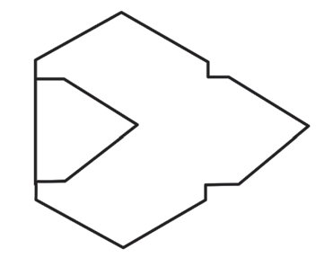
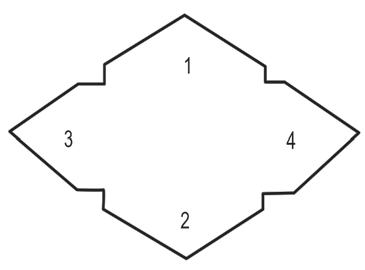

Fold side number 2 inward. Fold it until it lies on top of sides 3 and 4 as shown in Figure 6;

Figure 6: Side number 2 of the folded envelope
Apply glue to all the parts of sides 2, 3, and 4 that will be joined. Then, join them together and press firmly as shown in Figure 7;

Figure 7: Sides 2, 3, and 4 of the envelopes are joined together
Folded envelope shape with sides 3 and 4 crossed over in the middle.Figure 5: Sides 3 and 4 of the folded envelope15.Fold side number 2 inward.Fold it until it lies on top of sides 3 and 4 as shown in Figure 6;Envelope diagram showing side 2 folded up under sides 3 and 4, with side 1 open at the top.Figure 6: Side number 2 of the folded envelope16.Apply glue to all the parts of sides 2, 3, and 4 that will be joined.Then, join them together and press firmly as shown in Figure 7;Envelope diagram with sides 2, 3, and 4 joined together, and side 1 left open at the top.Figure 7: Sides 2, 3, and 4 of the envelopes are joined together